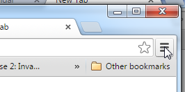
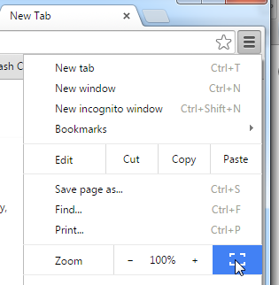
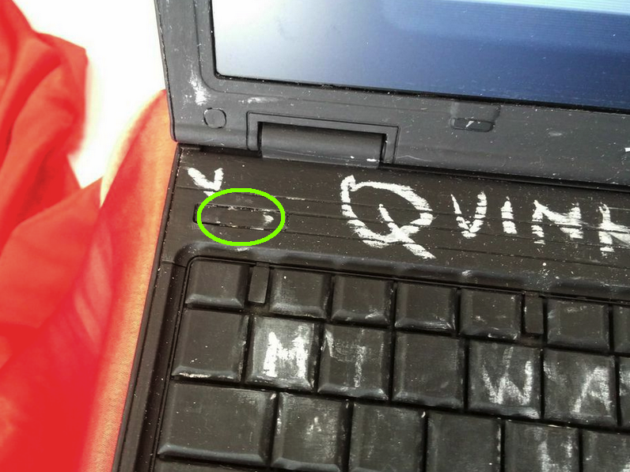
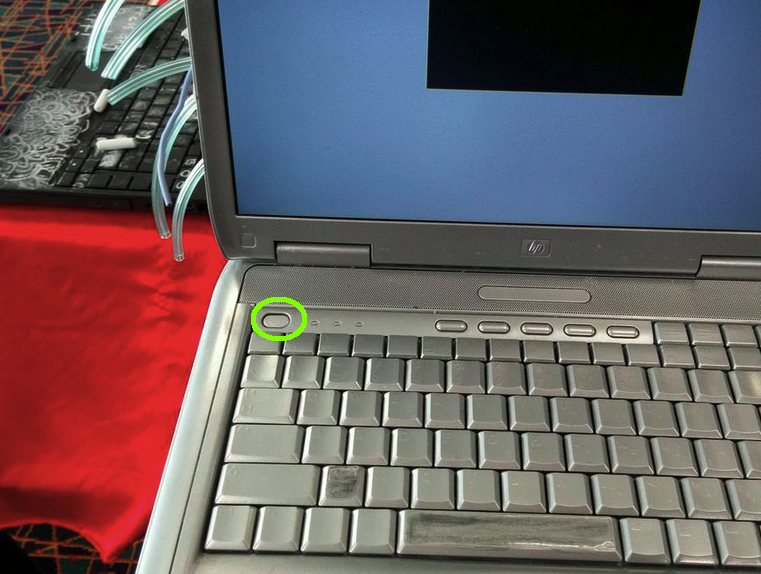
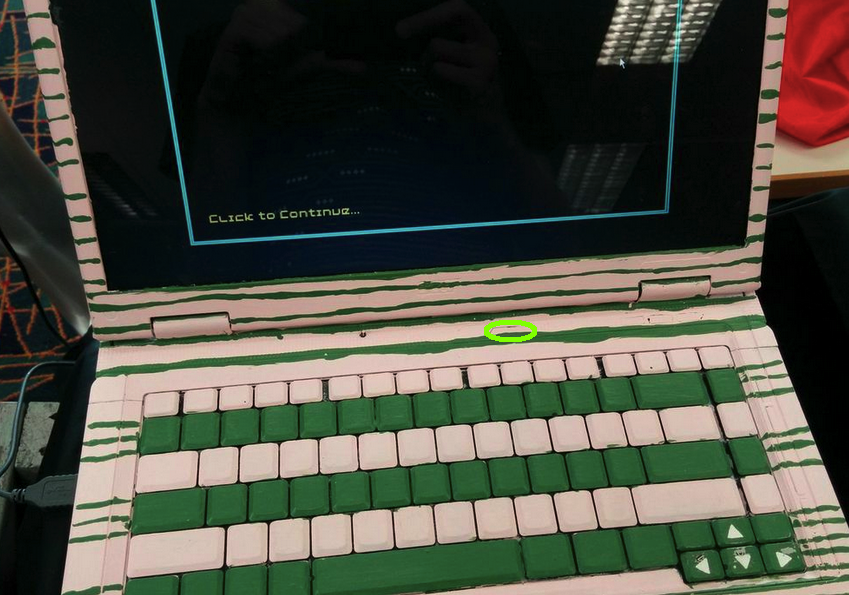
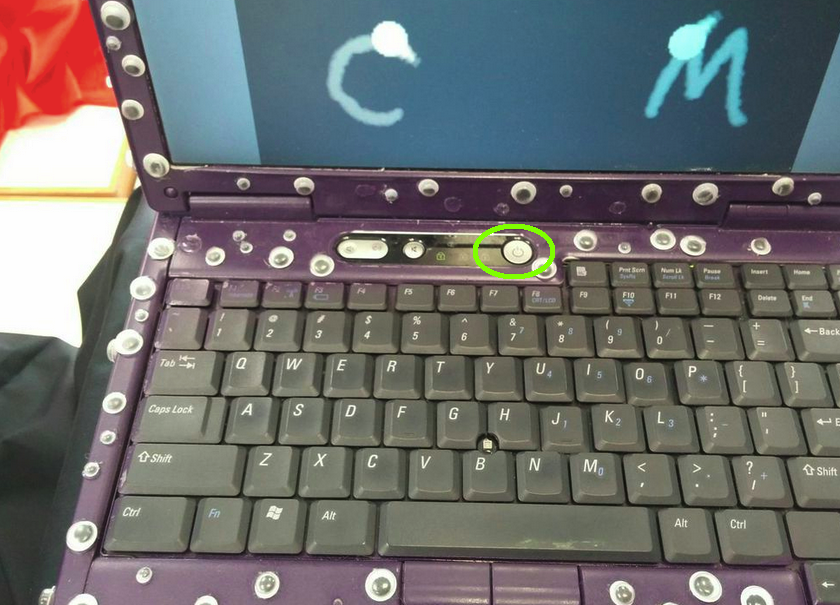
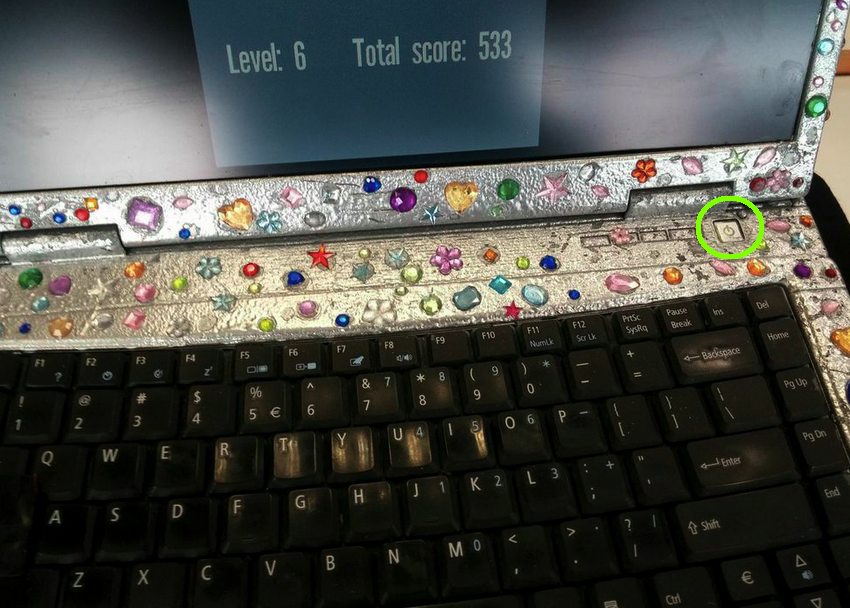
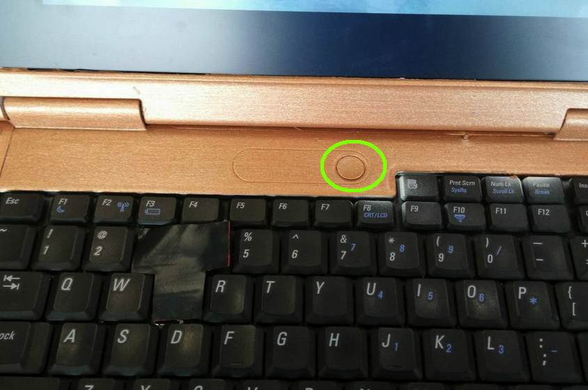

Seven computers from Pop-Up Arcade are visiting your library this month.
The arcade is meant to be messy and fun. Please relax and don't worry about breaking things :)
Each computer runs a different NZ-made videogame. These games were made by individuals or small teams in a relatively short timeframe, often by people who are not trained programmers or game developers. Think of them as the zines of the videogames world.
Please turn off all the painted laptops at the end of each day, to let them cool down.
Please do not turn off the cardboard arcade machine. (Just because it's a bit difficult to get to the power button.)
How to shut down a computer:
Please turn on all of the computers in the morning
Starting up computers
Two games require a bit more setup:
When you start Robofortress, it will be running in a Google Chrome. Please switch to full screen mode by doing this:


When you start Attack of the Meeplings (the computer with legs) it might pop up a Java security warning instead of the game. Ignore the big "BLOCK" buttons, look for words like "Allow this to run" and click on them.
If you turn off the cardboard arcade machine, you'll need to reach behind the machine to find the laptop hidden behind (sitting on the floor, partically open) to turn it on - then start the game, then put it back, not completely closed but almost closed so it stands up like an upside-down V. We recommend leaving it turned on so you don't need to do this.






If anything goes wrong, you can usually quit the game (Alt+F4) then start it again.
If this doesn't work, try restarting it (hold down the power button until the computer turns off, if neccessary.)
For more exotic problems, email or call us or tweet @popup_arcade